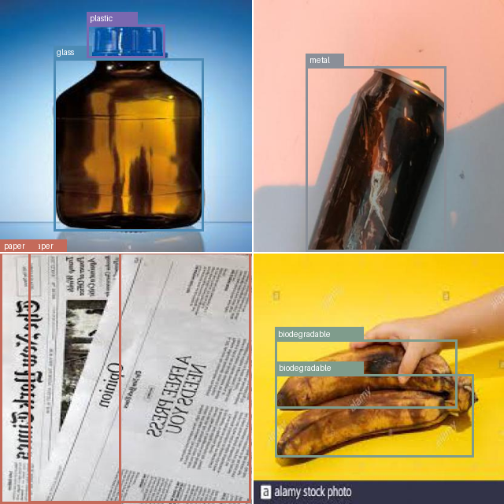

Garbage Detection Dataset · YOLOv5s. Click a step or a section to open it.
images/ + labels/)| Class | Boxes | Share |
|---|---|---|
| biodegradable | 45,407 | |
| glass | 7,809 | |
| plastic | 5,945 | |
| metal | 5,841 | |
| cardboard | 4,698 | |
| paper | 4,390 |

4 separate training images, each with one object and its box.
best.pt: epoch with the highest validation mAP